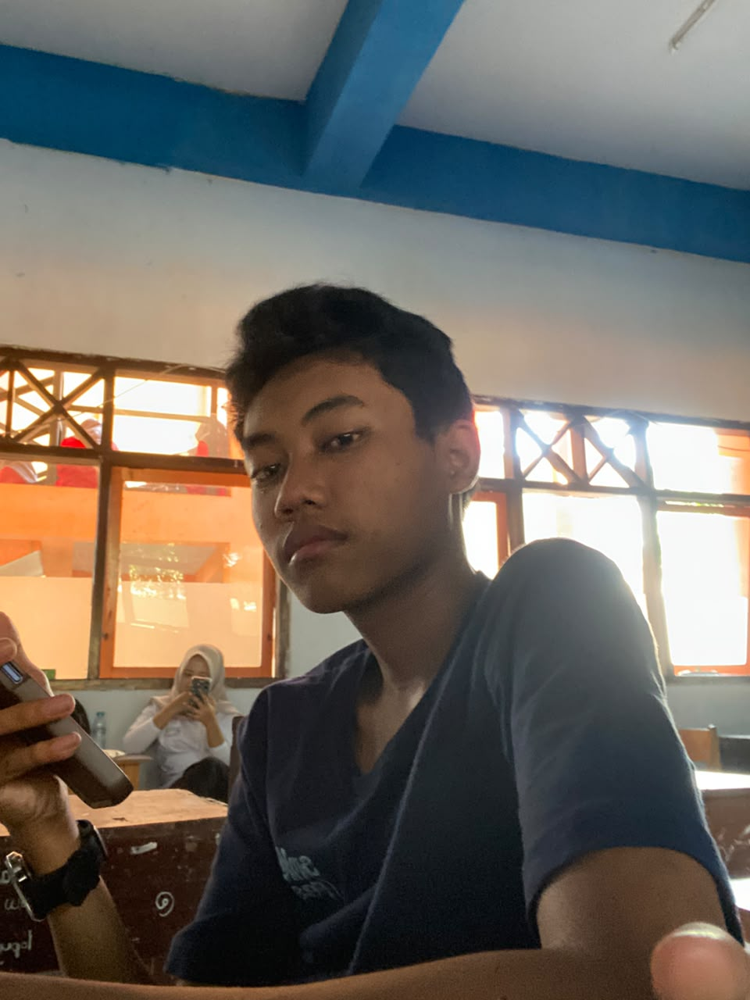

Fiky Putra Agus R
Web Developer
Siswa yang berfokus pada pengembangan website dan pembelajaran matematika digital.
Kalmetika dikembangkan sebagai media pembelajaran untuk siswa SMKN Pasirian jurusan Rekayasa Perangkat Lunak.
Kalmetika merupakan media pembelajaran matematika yang dirancang untuk membantu siswa memahami konsep barisan dan deret melalui kalkulator interaktif, contoh soal, rumus, dan pembahasan langkah demi langkah.
Foto profil diarahkan ke folder
/assets/images/
agar mudah diganti.

Siswa yang berfokus pada pengembangan website dan pembelajaran matematika digital.
Siswa yang berfokus pada pengembangan website dan pembelajaran matematika digital.
Siswa yang berfokus pada pengembangan website dan pembelajaran matematika digital.